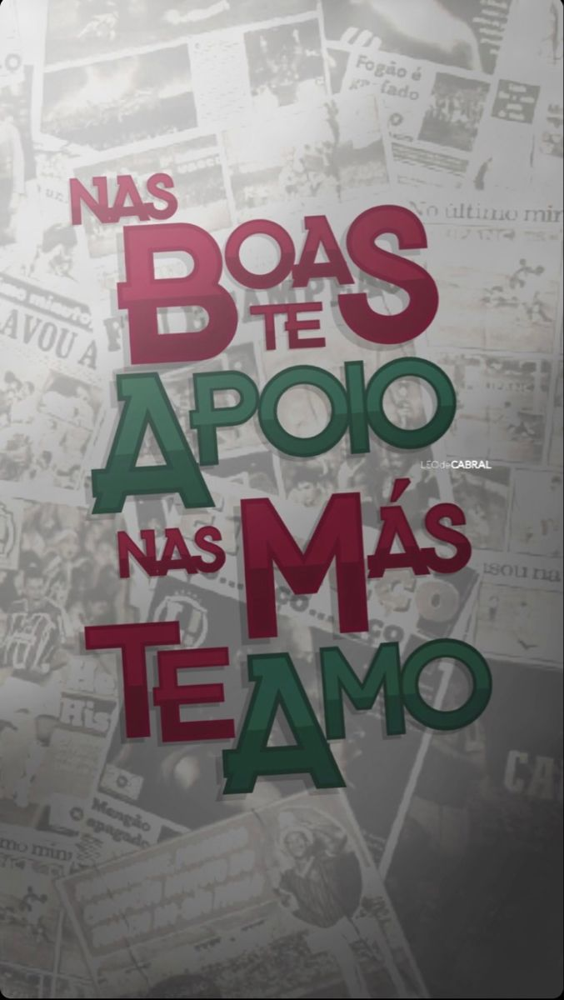
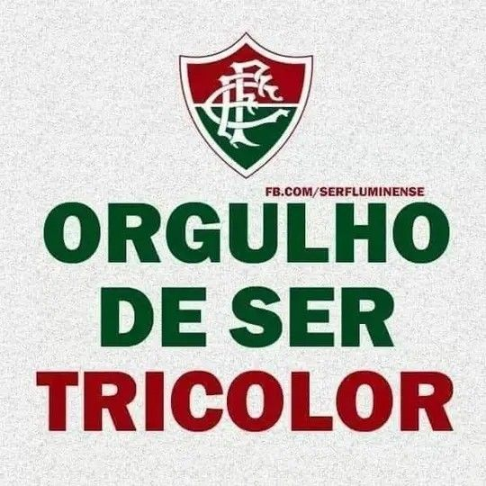

História do Fluminense Football Club
O Fluminense Football Club foi fundado em 21 de julho de 1902, no bairro das Laranjeiras, Rio de Janeiro, por Oscar Cox. Foi o clube que sediou o primeiro jogo da Seleção Brasileira, em 1914, e tornou-se referência em tradição e pioneirismo no futebol brasileiro.
Títulos Mais Importantes
🏆 Copa Rio Internacional (1952)
🏆 Copa Libertadores da América (2023)
🏆 Recopa Sul-Americana (2024)
🏆 Campeonatos Brasileiros: 1970, 1984, 2010, 2012
🏆 Copa do Brasil (2007)
🏆 33 Campeonatos Cariocas
Craques Revelados pelo Flu
Castilho
Carlos Alberto Torres
Edinho
Thiago Silva
Marcelo
Rivalidades
Fla-Flu Clássico contra o Flamengo, um dos maiores do mundo.
Clássico Vovô Contra o Botafogo, o mais antigo do Brasil.
Contra o Vasco Disputas históricas e equilibradas.
Torcida e Tradição
A torcida do Flu é fiel, vibrante e conhecida por apoiar o time nos momentos difíceis. Em 2009, o time escapou de forma heroica do rebaixamento e ganhou o apelido de “Time de
Guerreiros”.Curiosidades
Foi o clube que mais cedeu jogadores à Seleção nas primeiras décadas. Tem uma das sedes mais tradicionais do Brasil: Laranjeiras. Em 2008, perdeu a final da Libertadores para a LDU, em um jogo histórico no Maracanã.“Fluminense, o clube que nasceu com vocação para a eternidade.”
